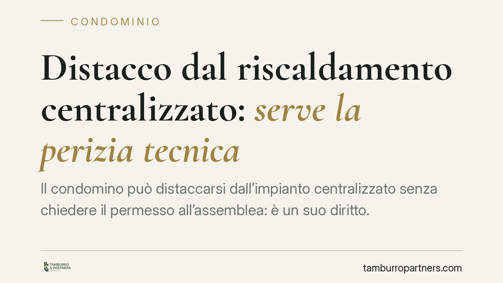

Distacco dal riscaldamento centralizzato: serve la perizia tecnica
Il condomino può distaccarsi dall'impianto centralizzato senza chiedere il permesso all'assemblea: è un suo diritto. Ma per non pagare più le spese di consumo deve provare, con perizia tecnica, che il distacco non crea squilibri né aggravi per gli altri. Lo ribadisce la Corte d'Appello di Napoli con la sentenza 4312/2026, che fa chiarezza su un contenzioso molto frequente.

Il caso e la decisione
Un condomino si distacca dall'impianto di riscaldamento centralizzato e smette di versare la quota di consumo. Il condominio contesta la decisione e pretende comunque il pagamento. La Corte d'Appello di Napoli, con la sentenza 4312/2026, fissa una distinzione netta tra due piani che spesso vengono confusi: il diritto al distacco e l'esonero dalle spese.
Il primo spetta al singolo e non dipende da un via libera dell'assemblea. Il secondo, invece, non è automatico: scatta solo se il condomino dimostra, con una perizia tecnica, che il suo distacco non produce squilibri di funzionamento né aggravi di costo per chi resta allacciato.
Inquadramento normativo
La base è l'art. 1118, comma 4, del Codice civile. La norma stabilisce che il condomino può rinunciare all'uso dell'impianto centralizzato di riscaldamento o condizionamento "se dal suo distacco non derivano notevoli squilibri di funzionamento o aggravi di spesa per gli altri condomini". Chi si distacca resta comunque tenuto a concorrere al pagamento delle spese per la conservazione dell'impianto (manutenzione straordinaria, messa a norma, sicurezza), perché continua a essere comproprietario del bene comune.
La Corte precisa che il distacco è un atto unilaterale lecito: non richiede autorizzazione assembleare. L'assemblea non può vietarlo, ma il condomino che vuole smettere di pagare i consumi deve fornire la prova tecnica delle condizioni previste dalla norma. In mancanza, il distacco è valido ma l'obbligo contributivo sulle spese di consumo permane.
Sul fronte della misurazione, resta applicabile il D.lgs. 102/2014, che impone la contabilizzazione del calore tramite ripartitori o contatori individuali. La contabilizzazione serve a distribuire le spese in base al consumo effettivo e a quello involontario (dispersioni dell'impianto), e incide direttamente sulla quantificazione di ciò che il distaccato deve o non deve.
La perizia tecnica: perché è decisiva
Il cuore della pronuncia è l'onere probatorio. Non basta dichiararsi distaccati per non pagare. Serve una perizia tecnica analitica che dimostri due elementi:
- l'assenza di notevoli squilibri termici per le altre unità (ad esempio, che gli appartamenti confinanti non debbano consumare di più per compensare le pareti fredde del distaccato);
- l'assenza di aggravi di spesa per il condominio nel suo complesso.
Senza questa prova, il giudice presume che il distacco incida negativamente e condanna il condomino a contribuire. È un'inversione pratica del rischio: chi agisce per risparmiare deve documentare che il risparmio non si scarica sugli altri.
Implicazioni pratiche
Per il condomino che intende distaccarsi, la sentenza alza l'asticella: la perizia non è un accessorio, è il presupposto per l'esonero dai consumi. Agire senza relazione tecnica espone al rischio di continuare a pagare, anche dopo aver spento il proprio impianto.
Per l'amministratore, la decisione offre un criterio chiaro di gestione: non può negare il distacco, ma può e deve pretendere la documentazione tecnica prima di modificare le tabelle di riparto. Deliberare l'esonero senza perizia può generare responsabilità.
Per l'assemblea, resta fermo il limite alle impugnazioni: le delibere che si limitano a prendere atto del distacco o a ripartire le spese secondo i criteri di legge sono difficilmente contestabili se motivate su basi tecniche.
Cosa fare in concreto
- Commissionate la perizia prima del distacco. Affidate a un tecnico abilitato una relazione sugli squilibri termici e sugli eventuali aggravi di spesa.
- Comunicate formalmente il distacco all'amministratore, allegando la perizia e indicando la data di efficacia.
- Verificate la contabilizzazione. Controllate che i ripartitori siano installati e tarati secondo il D.lgs. 102/2014, perché incidono sul calcolo delle quote residue.
- Distinguete le voci di spesa. Ricordate che continuate a pagare la conservazione e la messa a norma dell'impianto anche dopo il distacco.
- Documentate tutto. Conservate perizia, comunicazioni e delibere: sono la vostra difesa in caso di contenzioso.
Consigliamo di valutare la fattibilità tecnica ed economica del distacco in via preventiva, con un confronto tra perizia termica e stima dei costi residui, per evitare risparmi solo apparenti.
---
*Contributo informativo a cura di Tamburro & Partners - Avv. Giuseppe Tamburro. Non costituisce parere legale.*
Ogni condominio ha una storia a sé.
Se gestisci un'amministrazione e vuoi un confronto su una specifica questione condominiale, scrivi allo studio. Ti rispondiamo entro un giorno lavorativo.